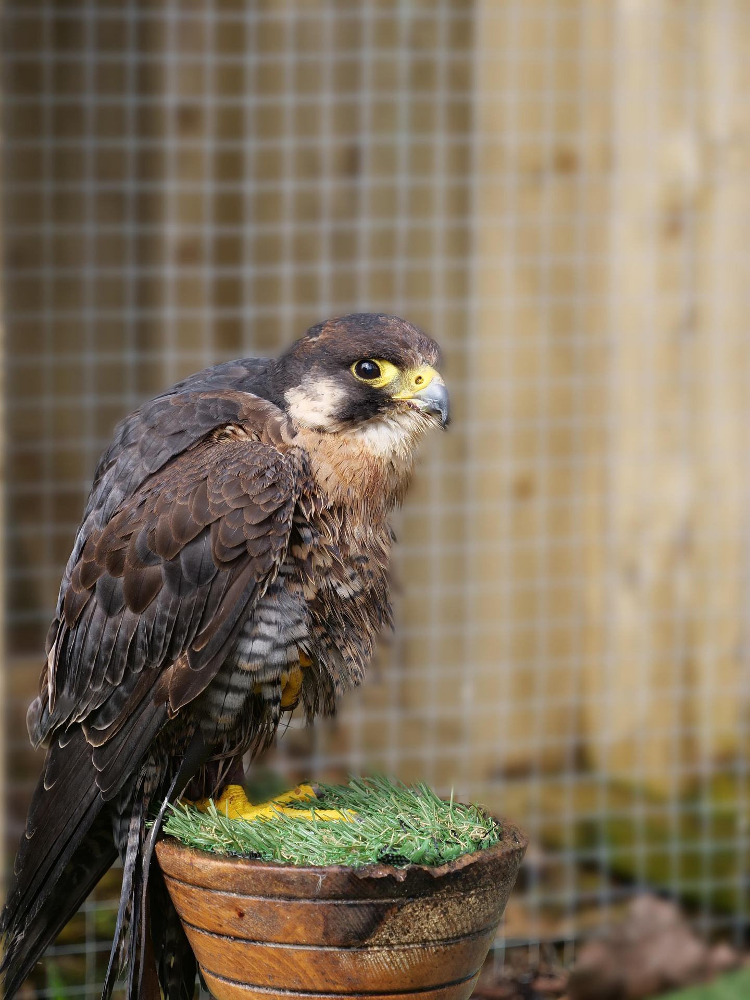
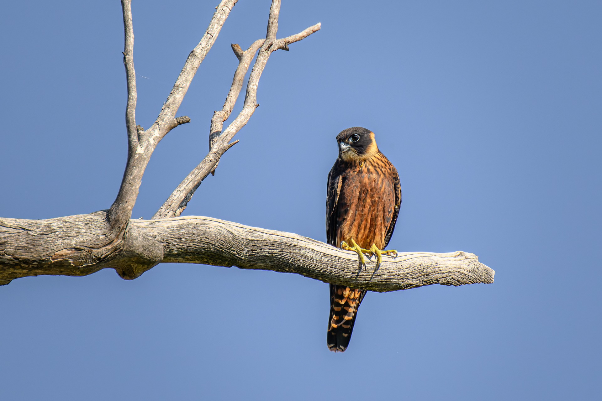
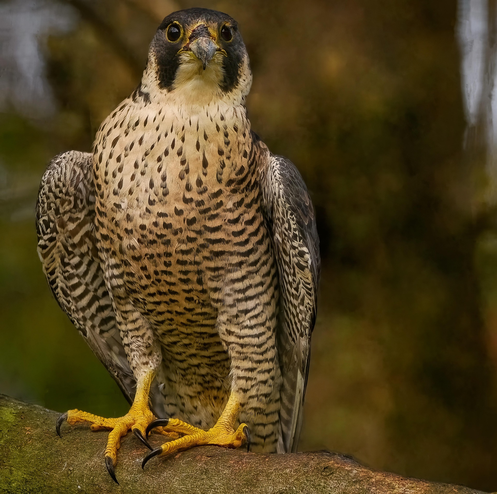

北米大陸を中心に分布する中型猛禽類。時速300kmを超える急降下で空中の鳥類を捕食する卓越したハンター。北アメリカの生態系の頂点に君臨する存在。

日本では主に夏鳥として北海道や東北地方で繁殖し、冬に本州以南の暖地や南国へ渡る。スマートな長い翼をもち、空中で飛んでいる小鳥を捕食する優れた飛翔能力がある。

一般的なハヤブサより体格がひと周り大きく、頭巾をかぶったとうな黒い頭部と、胸部の太い横斑が特徴。